タウタウ工房
今日もバイタクの後ろに乗ってトラジャのあちこちをウロウロしてみた。
本項で最初に紹介したケテケスの近くを走っているとバイタク兄貴が「ここ見てくか？」と聞く。
見れば小川のほとりに建つ粗末な掘っ建て小屋じゃないか。
何でこんなところを…と思ったが、中を見て納得。
タウタウを作っている工房なのだ。
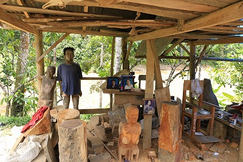
これは見ねば！バイタク兄貴、グッジョブ也！
奥から現れたのは宮史郎似のおやじ様。
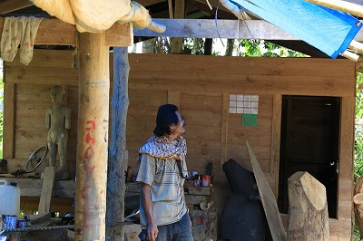
（判らない輩は今すぐググりんしゃい！トラジャの墓のことより大事ぞな、宮史郎！）
風体としてはラフなトラジャの人々に比べて一層ラフな感じ。
ま、かなりフリーダムなライフスタイルのようだ。
工房、といってもこの宮史郎様がひとりで制作している様子。
真ん中には現在制作中のタウタウ人形があった。
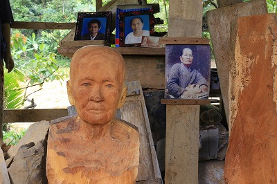
柱に貼られているのが故人の写真。それを見ながら制作していくのだ。
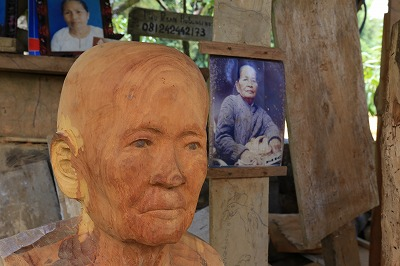
素材はジャックフルーツの木を使うのだという。
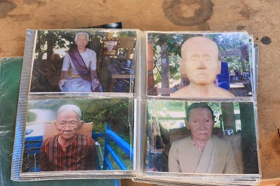
今まで手掛けたタウタウの写真を見せてもらう。
かなりの数を手掛けている。
トラジャ全域に何人くらいタウタウ人形を作ったいる人がいるのかは判らないが、これまで見た人形のクオリティからいって名人の域にいるのではなかろうか。宮史郎様。
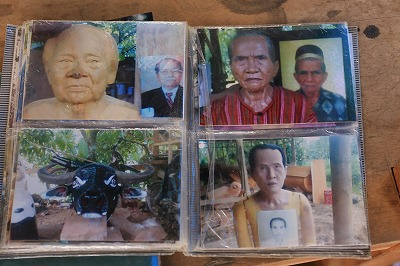
木彫像ではあるものの湿気の多い岩窟に奉納する場合が多いので、塗装を施し、さらにニス塗りまでしてある。
結果木彫のディテールがスパッと消え去り、コンクリの仏像に似たテイストが醸し出されてしまうのだった。
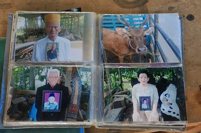
完成すると遺影とツーショット、がお決まりのようだ。
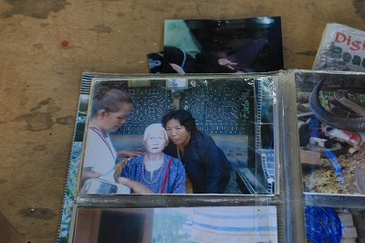
遺族とのツーショット。
この写真からだけでも遺族が故人の依代であるタウタウ人形を慕っているのが伝わってくる。
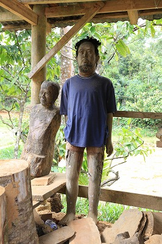
工房の片隅には完成寸前のタウタウ人形があった。
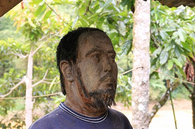
他のタウタウは毛髪部分も木だったが、この人形だけは水牛の毛で作った髪と髭がしつらえられている。
その分、妙にリアルで不気味な存在感を示していた。
これはスペシャルなのか？と聞くと「そうそう、これはスペシャルだ」という。
聞けば日本に住んでいるトラジャ人のオーダーを受けて制作したのだそうな。
いや、もしかしたら日本人のオーダーと言っていたのかも。
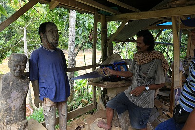
宮史郎様曰く、依頼を受けたものの何らかの理由で制作がストップしているご様子。
支払いが滞ったのか、連絡が取れなかったのか…。
依頼者の方、もしこのサイトをご覧になっていたら宮史郎様に連絡して下さいよ。
困ってましたよ、史郎様。
ノコギリを振り回して説明してくれる史郎様。最後にTシャツをめくりあげると…
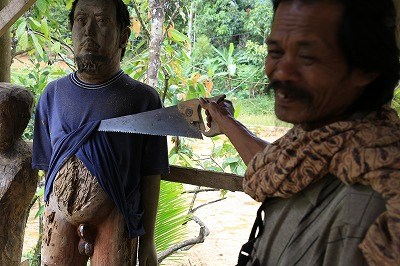
あああ！そんなトコまで彫り込んであるなんてっ！
「な、だからスペシャルだって言っただろ！」とほくそ笑む史郎様。あんた凄いよ！
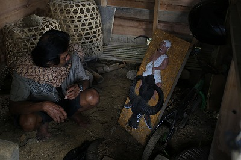
史郎様はタウタウ人形だけでなく、トンコナンハウスの装飾も手掛けている。
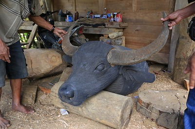
こちらはトンコナンの正面にとり付ける水牛の頭。
頭部は木製だが、角だけは本物を使うところがトラジャっぽいなあ。
…良いモノ見せていただきました！
次へGO！
トラジャの葬式と墓に戻る
珍寺大道場 HOME